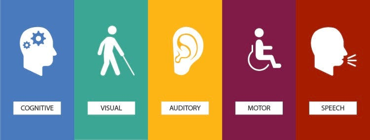

Ensuring an Inclusive Web: The Importance of Accessibility
We are a team focused on exploring web accessibility and its crucial role in creating an inclusive digital environment. Our project aims to raise awareness about the significance of designing websites that are usable by everyone, including people with various disabilities. Through this project, we are learning how to implement best practices that ensure web content is accessible to all users, regardless of their abilities or limitations.

Accessibility Features
Our website is fully compatible with screen readers.
All interactive elements are accessible via keyboard navigation.